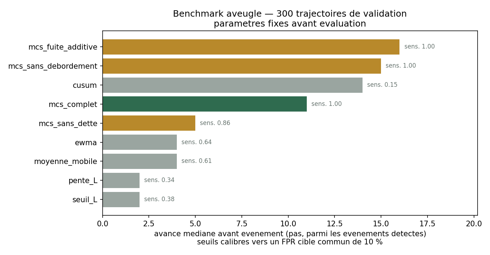
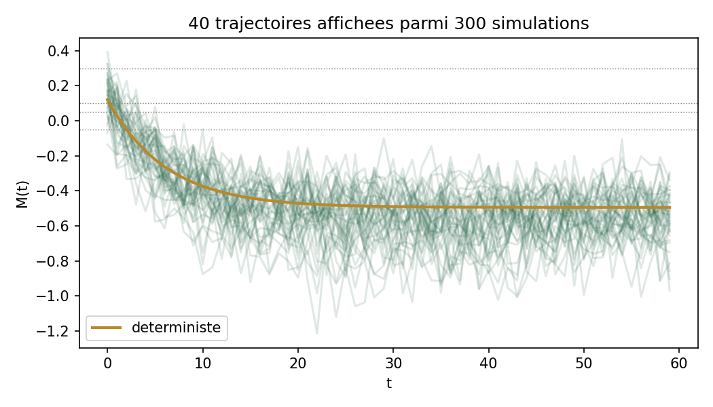
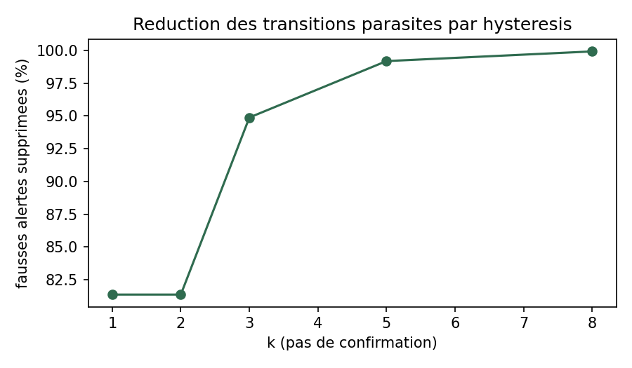
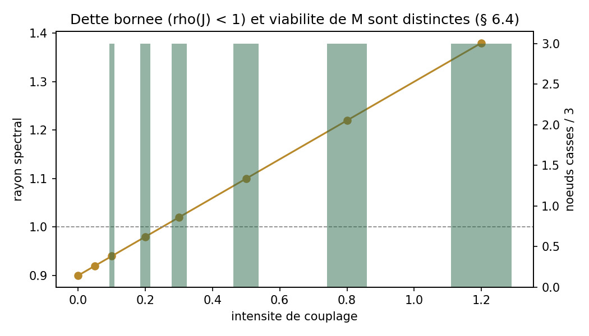
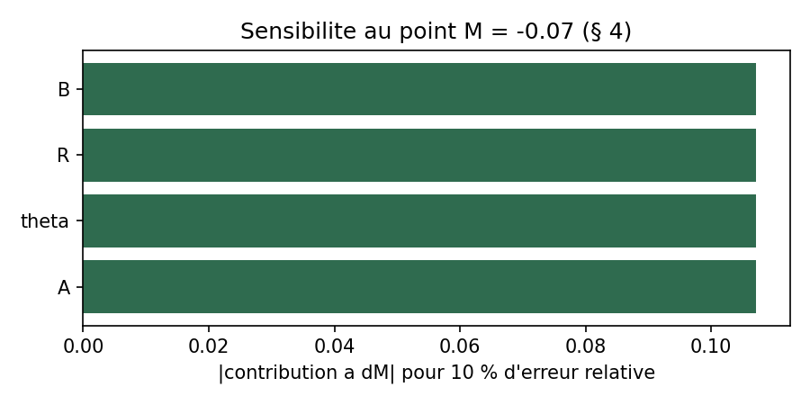
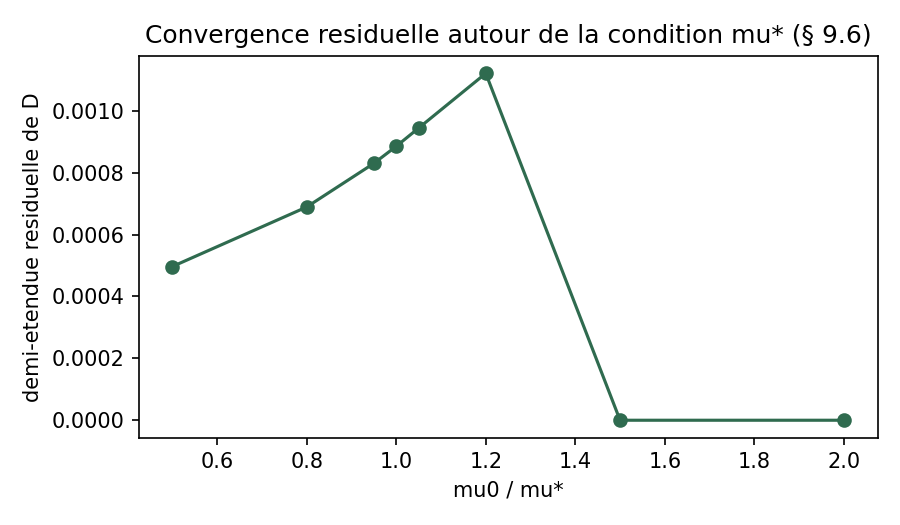

Chiffres injectés depuis data/results.json, généré par la CI (génération locale) — aucun nombre saisi à la main.
Résultats calculés
Ce que le dépôt démontre aujourd’hui
Les résultats ci-dessous établissent la cohérence interne, la robustesse numérique et la reproductibilité des scénarios définis. Ils ne remplacent pas une validation sur données externes.
01
Cohérence du noyau
Les cas limites, niveaux stationnaires, seuils analytiques et propriétés de bornitude sont couverts par des tests automatisés.
Tests chargés…02
Équivalence des moteurs
Un réseau à un seul nœud sans couplage reproduit désormais le moteur individuel, extensions comprises.
Invariant architectural03
Benchmark aveugle
Le MCS complet est comparé à cinq baselines de charge avec une même règle de calibration et un FPR cible commun.
Résultat chargé…04
Filtrage du transitoire
Un choc bref peut déclencher la baseline de charge sans empêcher le système de revenir en zone viable.
F2 PASS05
Avance dissociée
F3a mesure l’avance sur les baselines ; F3b exige une anticipation réelle de l’événement. Une alerte simultanée ne compte plus comme signal avancé.
F3a + F3b séparés06
Anti-circularité
Le calcul refuse un protocole non gelé ou modifié après gel. Les proxys et seuils doivent être déclarés avant l’analyse.
Vérification intégréeRobustesse numérique
Voir les dynamiques, pas seulement les scores






Méthode
Une chaîne de preuve explicite
Déclarer
Définir les proxys, ancrages, seuils, erreurs relatives et règles d’agrégation avant de regarder les résultats.
Geler
Calculer une empreinte SHA‑256 du protocole. Toute retouche ultérieure est détectée.
Calculer
Normaliser L, R et B, mettre à jour D, calculer C puis M, et appliquer l’hystérésis sans fuite du futur.
Comparer
Confronter le MCS à cinq baselines de charge et à trois ablations, avec une même règle de calibration et des graines de validation disjointes.
Chercher l’échec
Publier les contre-exemples, les défaites face aux baselines et les limites négatives — notamment les événements exogènes absents de L, R et B.
Discipline d’interprétation
Ce qui n’est pas encore démontré
Validation externe
Les résultats actuels sont synthétiques. La capacité prédictive sur des systèmes réels reste à tester sur des données indépendantes.
Identifiabilité
Plusieurs combinaisons de L, D, R, B, Θ et ρ peuvent produire des trajectoires proches. Les causes ne sont pas inférées automatiquement.
Seuils universels
Les zones sont ordinales et pédagogiques. Elles doivent être calibrées par domaine et rapportées avec incertitude.
Pas de diagnostic
Une valeur négative isolée de M ne suffit jamais à conclure sur une personne, une équipe ou une organisation.
Reproductibilité
Rejouer l’intégralité des résultats
Le dépôt inclut les tests, les scripts de robustesse, le protocole d’exemple et les rapports générés.
git clone https://github.com/<compte>/mcs-model.git
cd mcs-model
pip install -e ".[dev,viz,protocol]"
pytest -q
python scripts/run_robustness.py
python scripts/run_protocol_demo.py